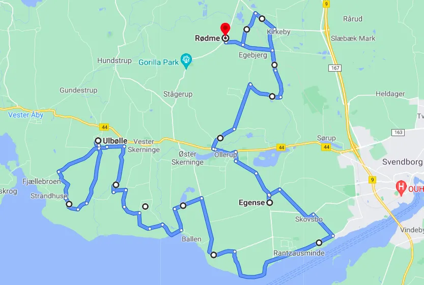

13. etape: Ulbølle – Col de Rødme – Carsten Jacobsen vinder på Col de Rødme

Tiljublende badepiger på sydfynske Rivera, 2 gange det fynske Monte Ventoux, Col de Egense Kirke, “Monte Egebjerg” og den evighårde Col de Rødme, var ingredienserne til etapen før hviledagen. 

Da feltet stod klar på startstregen i dag i Ulbølle ved den sydfynske Rivera stod én ting klart. Det ville blive en hård og afgørende dag. Arrangørerne havde med rund hånd strøet forhindringer ud for rytterne. Sektorer med brosten, og grusveje gennem mørke skove, foruden stigninger udenfor kategori.

Taktikken var klar. Holdet skulle stikke i højre og venstre og i det afgørende moment, skulle Domestic Jakobsen rykke på det fynske Monte Ventoux, “Monte Egebjerg”, som skulle forceres to gange, fra syd og fra nord.
Efter en rolig tur langs Rivieraen, hvor badepigerne tiljublede rytterne kom feltet til de første stigninger. Domestic Jakobsen gad ikke mere snak og rykkede fra feltet, inden nogle af hjælperytterne nåede at komme i gang med taktikken.

Jeg blev sgu lidt opstemt af alle de badepiger, så jeg måtte derua’, udtaler Jakobsen. Jeg fik en solid fynsk morgenmad bestående af blodpølse, æg og hjemmebrygget sort øl. Det gik lige i stængerne!
Fra bunden af den første stigning Col de Egense Kirke smed Jakobsen kæden ud på akslen og trådte i vanlig flydende stil over Monte Egebjerg, først fra syd og så fra nord, inden turen gik tilbage mod målbyen over den altid strabadserende Col de Rødme.
FORZA CARSTEN
13. Etape:
1. Carsten Jacobsen, Squadra Molteni
Klassement:
1. Carsten Jacobsen, Squadra Molteni
2. Svend Seegert, Squadra Molteni
3. Jens Langergaard, Squadra Molteni
4. Eigil Leegaard, Squadra Molteni
5. Max ”Maxteni” Nielsen, Squadra Molteni
6. Per Sandahl, Squadra Molteni
7. Grane Maaløe, Squadra Molteni
8. Niels Bjørnsteen, Squadra Molteni
9. Løjtnant Sørensen, Squadra Molteni
Hold:
1. Squadra Molteni
2. Team K-Werk
DNS-Klassement:
Thomas Marker, Team Brooklyn